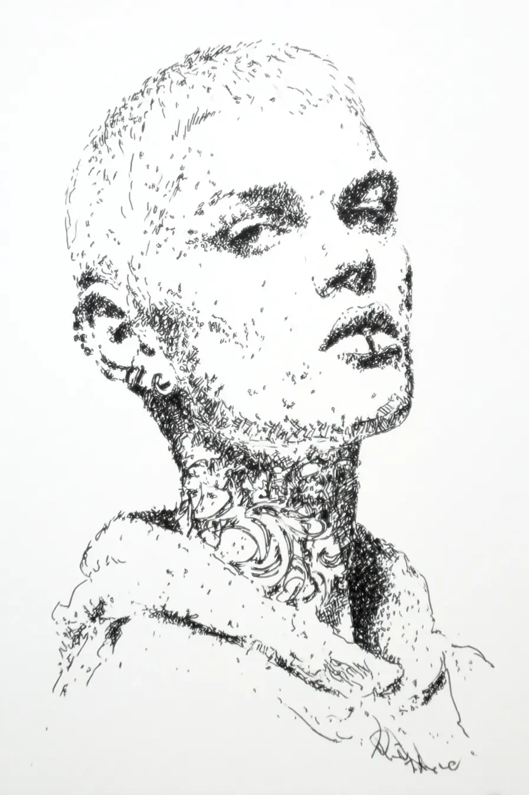

그녀는 마지막 머리카락이 바닥에 떨어지는 순간, 과거의 무게가 함께 사라지는 것을 느꼈다.
[The moment the last strand of hair fell to the floor, she felt the weight of the past disappear with it.]
목에 두른 장신구만이 그녀가 누구였는지를 기억하는 유일한 증거였다.
[The ornament around her neck was the only evidence that remembered who she once was.]
사람들은 그녀의 민머리를 보며 수군거렸으나, 그 소리는 이제 바람 소리에 불과했다.
[People whispered at the sight of her shaved head, but now those sounds were nothing more than wind.]
그녀는 눈을 감고 자신의 숨소리에만 귀를 기울였다.
[She closed her eyes and listened only to the sound of her own breathing.]
피부 아래에서 새로운 존재가 깨어나고 있었다.
[Beneath her skin, a new being was awakening.]
허물을 벗은 뱀처럼, 그녀는 이제 더 선명하게 세상을 감각했다.
[Like a snake that had shed its skin, she now sensed the world more vividly.]
과거의 자신은 이미 재가 되어 흩어졌고, 남은 것은 오직 현재뿐이었다.
[Her former self had already turned to ash and scattered, and all that remained was the present.]
고요 속에서 그녀의 입술이 천천히 호를 그렸다.
[In the stillness, her lips slowly curved into an arc.]